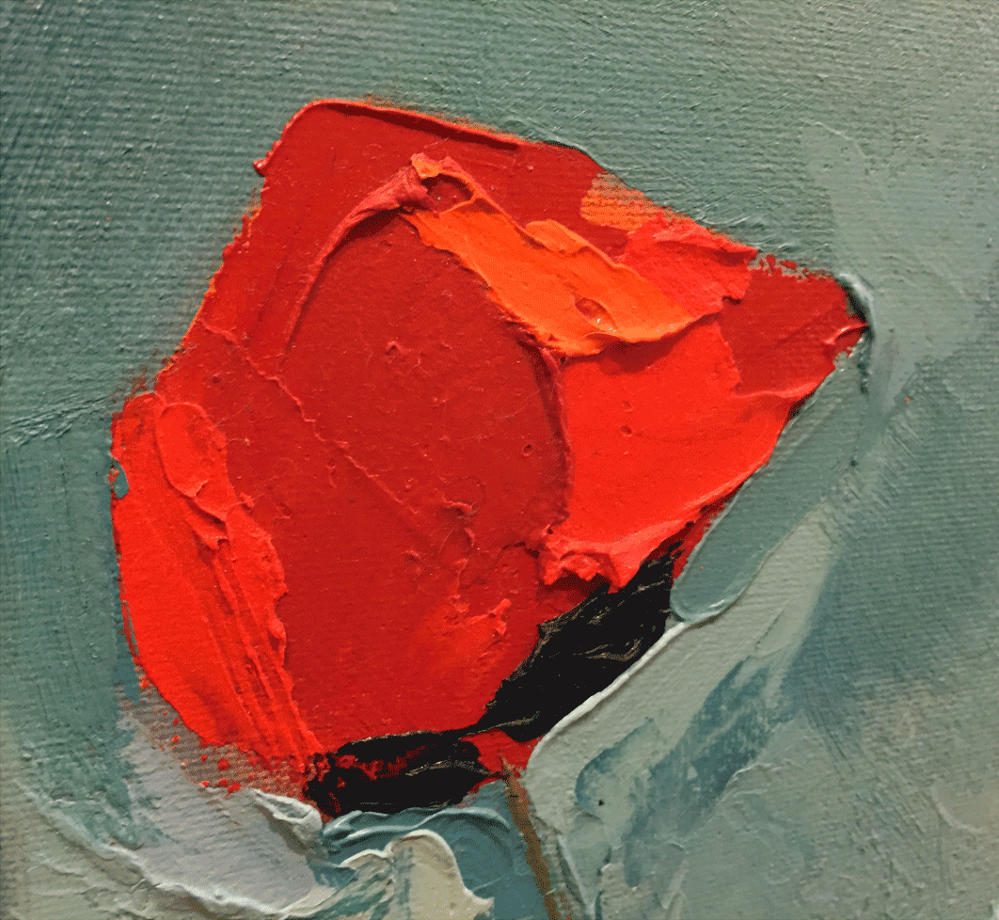
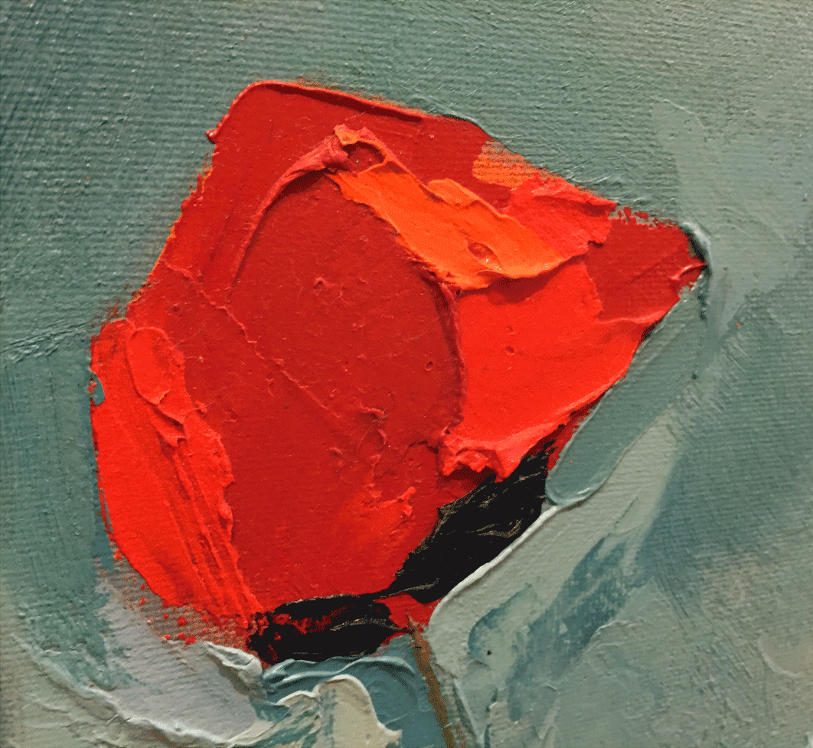

Poppies

Oil on canvas
16" x 20"
Delicate flowers, put onto the canvas using a palette knife and wax medium to build up the texture.

Oil on canvas
16" x 20"
Delicate flowers, put onto the canvas using a palette knife and wax medium to build up the texture.
